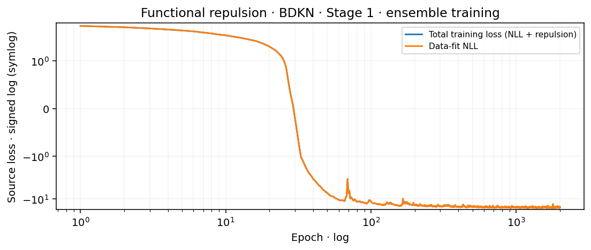
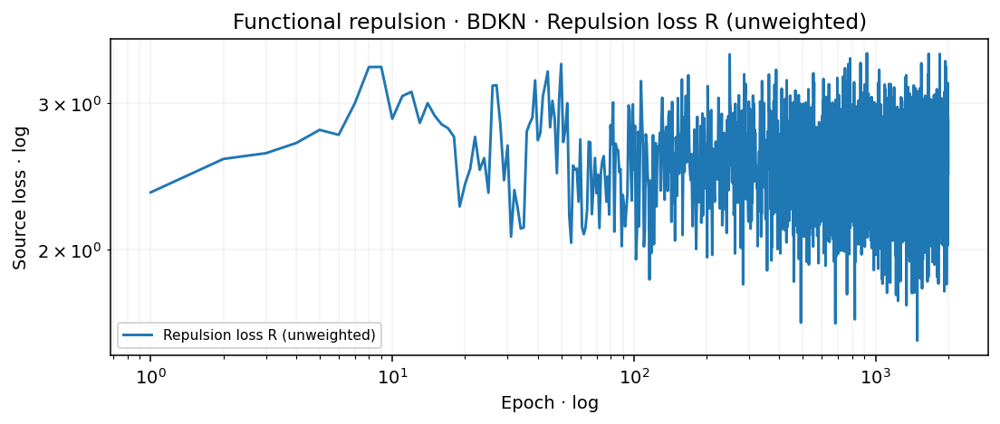
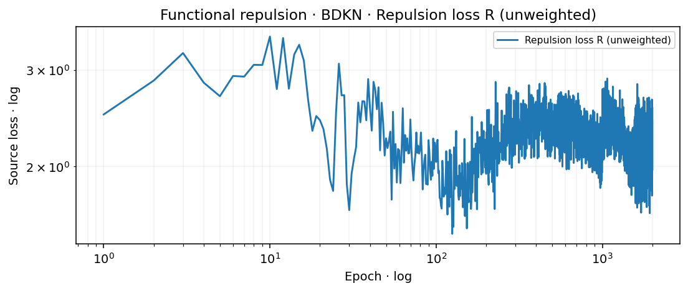
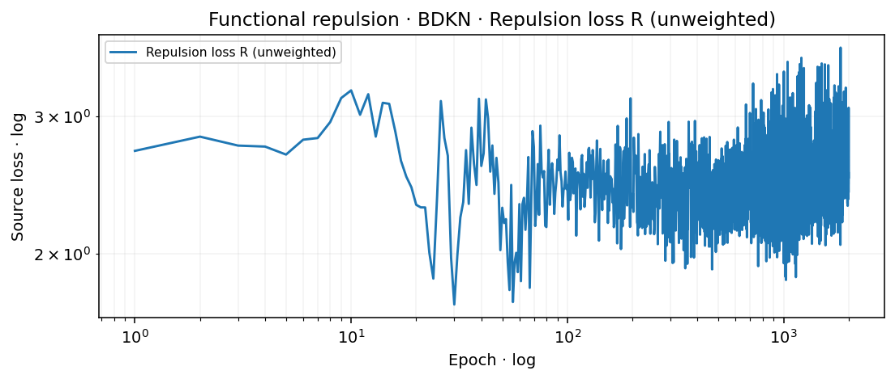
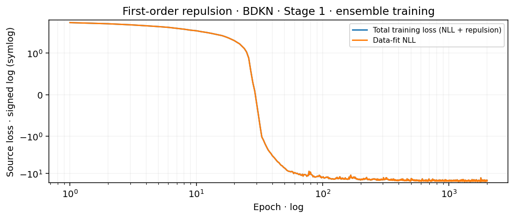
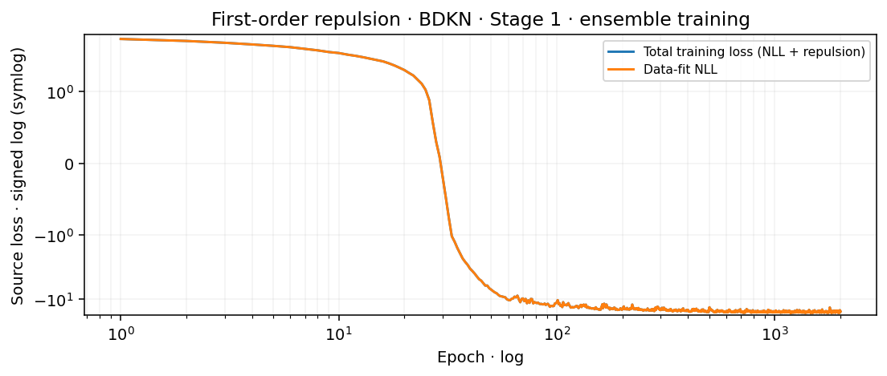
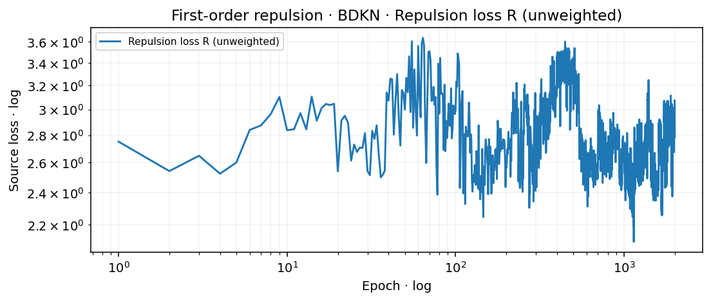
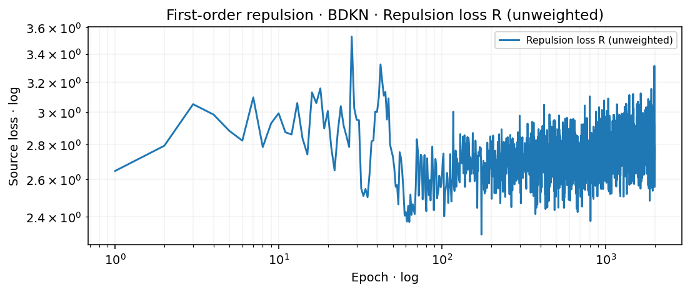
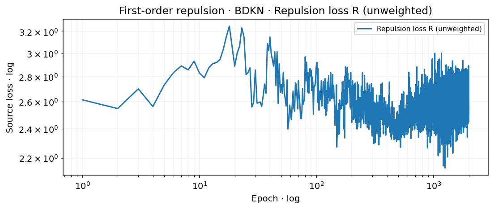
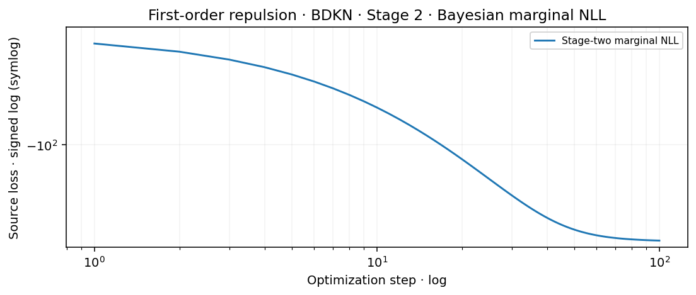

Regression comparison
Download resultsDataset
Training setting
Repulsion weight
Repulsion location
Compare repulsion locations
Method
Random points redraw every step and exclude all training inputs. Training and random use B points; combined uses 2B. Prediction axes match within each DE or BDKN row.
Functional repulsion
BetterWorse · relative rank within each column
DE
| Repulsion inputs | RMSE | NLL | Training seconds |
|---|---|---|---|
| Training | 1.23311 | 797.52417 | 12.23 |
| Random | 1.48795 | 216.08749 | 13.14 |
| Training + random | 1.35227 | 241.56553 | 13.32 |
BDKN
| Repulsion inputs | RMSE | NLL | Training seconds |
|---|---|---|---|
| Training | 1.23256 | 69.58602 | 12.37 |
| Random | 1.48789 | 25.22969 | 13.28 |
| Training + random | 1.33315 | 21.01404 | 13.45 |
Stage 1 · total loss and data fit
X: log · Y: signed log

X: log · Y: signed log
X: log · Y: signed log
Repulsion loss R only

X: log · Y: log

X: log · Y: log

X: log · Y: log
Stage 2 · Bayesian marginal NLL
First-order repulsion
BetterWorse · relative rank within each column
DE
| Repulsion inputs | RMSE | NLL | Training seconds |
|---|---|---|---|
| Training | 1.23761 | 615.89380 | 24.68 |
| Random | 1.25148 | 223.21518 | 26.28 |
| Training + random | 1.27218 | 194.62494 | 26.14 |
BDKN
| Repulsion inputs | RMSE | NLL | Training seconds |
|---|---|---|---|
| Training | 1.23539 | 66.33092 | 24.82 |
| Random | 1.39735 | 22.20423 | 26.44 |
| Training + random | 1.26981 | 21.55153 | 26.28 |
Stage 1 · total loss and data fit
X: log · Y: signed log

X: log · Y: signed log

X: log · Y: signed log
Repulsion loss R only

X: log · Y: log

X: log · Y: log

X: log · Y: log
Stage 2 · Bayesian marginal NLL

X: log · Y: signed log
X: log · Y: signed log
X: log · Y: signed log
Weight repulsion · location-independent
The loss compares network parameters directly. These same results apply to every location.
| Stage | RMSE | NLL | Training seconds |
|---|---|---|---|
| DE | 3.03576 | 214.90420 | 9.72 |
| BDKN | 3.12740 | 19.05728 | 9.86 |